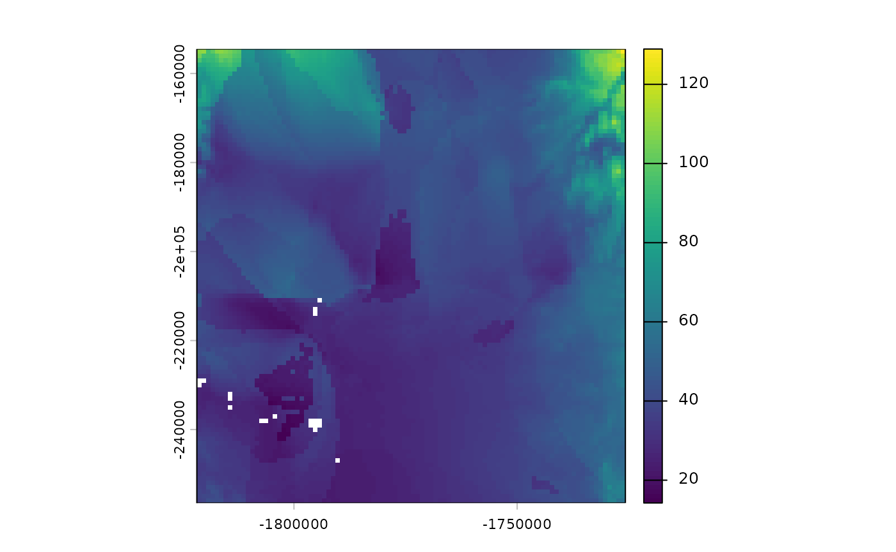

## rgeedim v0.4.0 -- using geedim 2.0.0 w/ earthengine-api 1.7.10## terra 1.8.97
project_id <- Sys.getenv("GOOGLE_CLOUD_QUOTA_PROJECT", "rgeedim-demo")
gd_initialize(project = project_id)## Using Application Default Credentials (ADC)
## Sacramento county area
# b <- soilDB::fetchSDA_spatial("CA067", "areasymbol", geom="sapolygon")
# sapply(terra::ext(b), as.numeric)
b <- gd_bbox(
xmin = -121.9,
ymax = 38.8,
xmax = -121.0,
ymin = 38.0
)
collection_name <- "NASA/ORNL/DAYMET_V4"
# search collection for spatial and date range
res <- collection_name |>
gd_collection_from_name() |>
gd_search(region = b,
start_date = "2020-01-01",
end_date = "2020-02-01")
# inspect table of IDs and dates
gd_properties(res)## id date
## 1 NASA/ORNL/DAYMET_V4/20200101 2020-01-01
## 2 NASA/ORNL/DAYMET_V4/20200102 2020-01-02
## 3 NASA/ORNL/DAYMET_V4/20200103 2020-01-03
## 4 NASA/ORNL/DAYMET_V4/20200104 2020-01-04
## 5 NASA/ORNL/DAYMET_V4/20200105 2020-01-05
## 6 NASA/ORNL/DAYMET_V4/20200106 2020-01-06
## 7 NASA/ORNL/DAYMET_V4/20200107 2020-01-07
## 8 NASA/ORNL/DAYMET_V4/20200108 2020-01-08
## 9 NASA/ORNL/DAYMET_V4/20200109 2020-01-09
## 10 NASA/ORNL/DAYMET_V4/20200110 2020-01-10
## 11 NASA/ORNL/DAYMET_V4/20200111 2020-01-11
## 12 NASA/ORNL/DAYMET_V4/20200112 2020-01-12
## 13 NASA/ORNL/DAYMET_V4/20200113 2020-01-13
## 14 NASA/ORNL/DAYMET_V4/20200114 2020-01-14
## 15 NASA/ORNL/DAYMET_V4/20200115 2020-01-15
## 16 NASA/ORNL/DAYMET_V4/20200116 2020-01-16
## 17 NASA/ORNL/DAYMET_V4/20200117 2020-01-17
## 18 NASA/ORNL/DAYMET_V4/20200118 2020-01-18
## 19 NASA/ORNL/DAYMET_V4/20200119 2020-01-19
## 20 NASA/ORNL/DAYMET_V4/20200120 2020-01-20
## 21 NASA/ORNL/DAYMET_V4/20200121 2020-01-21
## 22 NASA/ORNL/DAYMET_V4/20200122 2020-01-22
## 23 NASA/ORNL/DAYMET_V4/20200123 2020-01-23
## 24 NASA/ORNL/DAYMET_V4/20200124 2020-01-24
## 25 NASA/ORNL/DAYMET_V4/20200125 2020-01-25
## 26 NASA/ORNL/DAYMET_V4/20200126 2020-01-26
## 27 NASA/ORNL/DAYMET_V4/20200127 2020-01-27
## 28 NASA/ORNL/DAYMET_V4/20200128 2020-01-28
## 29 NASA/ORNL/DAYMET_V4/20200129 2020-01-29
## 30 NASA/ORNL/DAYMET_V4/20200130 2020-01-30
## 31 NASA/ORNL/DAYMET_V4/20200131 2020-01-31
td <- tempdir()
# download each daily image in collection as separate GeoTIFF (no compositing)
# Note: `filename` is a directory
res |>
gd_download(filename = td,
composite = FALSE,
region = b,
crs = "EPSG:5070",
scale = 1000)## NASA/ORNL/DAYMET_V4/20200101 NASA/ORNL/DAYMET_V4/20200102
## "/tmp/RtmpLE3mrf/20200101_1km.tif" "/tmp/RtmpLE3mrf/20200102_1km.tif"
## NASA/ORNL/DAYMET_V4/20200103 NASA/ORNL/DAYMET_V4/20200104
## "/tmp/RtmpLE3mrf/20200103_1km.tif" "/tmp/RtmpLE3mrf/20200104_1km.tif"
## NASA/ORNL/DAYMET_V4/20200105 NASA/ORNL/DAYMET_V4/20200106
## "/tmp/RtmpLE3mrf/20200105_1km.tif" "/tmp/RtmpLE3mrf/20200106_1km.tif"
## NASA/ORNL/DAYMET_V4/20200107 NASA/ORNL/DAYMET_V4/20200108
## "/tmp/RtmpLE3mrf/20200107_1km.tif" "/tmp/RtmpLE3mrf/20200108_1km.tif"
## NASA/ORNL/DAYMET_V4/20200109 NASA/ORNL/DAYMET_V4/20200110
## "/tmp/RtmpLE3mrf/20200109_1km.tif" "/tmp/RtmpLE3mrf/20200110_1km.tif"
## NASA/ORNL/DAYMET_V4/20200111 NASA/ORNL/DAYMET_V4/20200112
## "/tmp/RtmpLE3mrf/20200111_1km.tif" "/tmp/RtmpLE3mrf/20200112_1km.tif"
## NASA/ORNL/DAYMET_V4/20200113 NASA/ORNL/DAYMET_V4/20200114
## "/tmp/RtmpLE3mrf/20200113_1km.tif" "/tmp/RtmpLE3mrf/20200114_1km.tif"
## NASA/ORNL/DAYMET_V4/20200115 NASA/ORNL/DAYMET_V4/20200116
## "/tmp/RtmpLE3mrf/20200115_1km.tif" "/tmp/RtmpLE3mrf/20200116_1km.tif"
## NASA/ORNL/DAYMET_V4/20200117 NASA/ORNL/DAYMET_V4/20200118
## "/tmp/RtmpLE3mrf/20200117_1km.tif" "/tmp/RtmpLE3mrf/20200118_1km.tif"
## NASA/ORNL/DAYMET_V4/20200119 NASA/ORNL/DAYMET_V4/20200120
## "/tmp/RtmpLE3mrf/20200119_1km.tif" "/tmp/RtmpLE3mrf/20200120_1km.tif"
## NASA/ORNL/DAYMET_V4/20200121 NASA/ORNL/DAYMET_V4/20200122
## "/tmp/RtmpLE3mrf/20200121_1km.tif" "/tmp/RtmpLE3mrf/20200122_1km.tif"
## NASA/ORNL/DAYMET_V4/20200123 NASA/ORNL/DAYMET_V4/20200124
## "/tmp/RtmpLE3mrf/20200123_1km.tif" "/tmp/RtmpLE3mrf/20200124_1km.tif"
## NASA/ORNL/DAYMET_V4/20200125 NASA/ORNL/DAYMET_V4/20200126
## "/tmp/RtmpLE3mrf/20200125_1km.tif" "/tmp/RtmpLE3mrf/20200126_1km.tif"
## NASA/ORNL/DAYMET_V4/20200127 NASA/ORNL/DAYMET_V4/20200128
## "/tmp/RtmpLE3mrf/20200127_1km.tif" "/tmp/RtmpLE3mrf/20200128_1km.tif"
## NASA/ORNL/DAYMET_V4/20200129 NASA/ORNL/DAYMET_V4/20200130
## "/tmp/RtmpLE3mrf/20200129_1km.tif" "/tmp/RtmpLE3mrf/20200130_1km.tif"
## NASA/ORNL/DAYMET_V4/20200131
## "/tmp/RtmpLE3mrf/20200131_1km.tif"
# each EE image is named YYYYMMDD_1km, so geotiffs have same base name
r <- rast(list.files(td, pattern = "\\d{8}_1km.tif$", full.names = TRUE))
r2 <- r[[which(names(r) == "prcp")]]
# inspect: sum daily precip values -> monthly total
plot(sum(r2))
## optional: create animated GIF w/ {gifski}
# library(gifski)
#
# r3 <- cumsum(r2 + 1e-3)
# gifski::save_gif({
# res <- lapply(seq_len(nlyr(r3)), function(i) {
# plot(
# r3[[i]],
# type = "continuous",
# main = paste0("2020-01-", formatC(i, width = 2, flag = 0)),
# range = c(0, 100)
# )
# })
# }, delay = 0.25,
# width = 400,
# height = 400)
#
# browseURL("animation.gif")